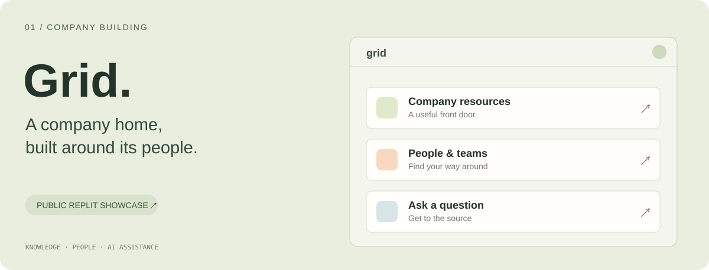
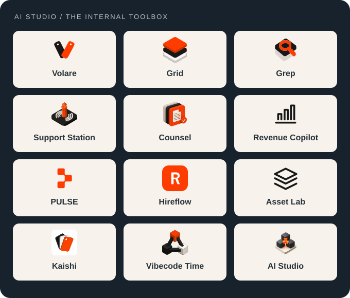
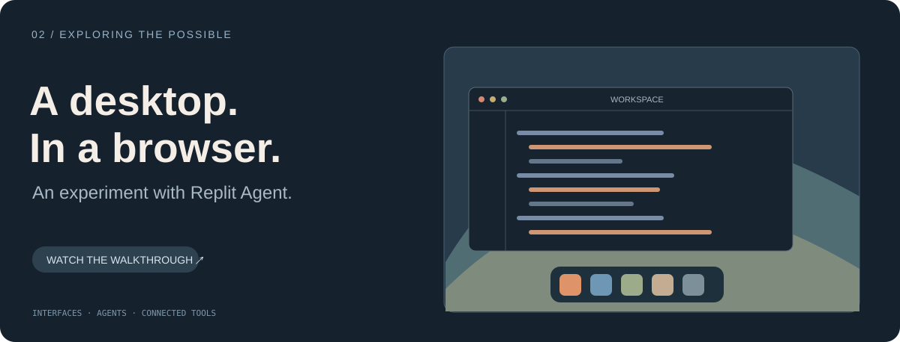

One home for the company.
Grid connects company resources, people, and AI-assisted answers in an employee hub built around the team.
AI CHIEF OF STAFF AT REPLIT
Ciao, I'm Luca. I turn the way teams work into
software built around them.

01 / THE THROUGHLINE
I lead AI Studio at Replit, working with teams to build tools around their actual needs. The job spans discovery, product, design, rollout, teaching, and the work that happens after launch.
I'm interested in what becomes possible when the people closest to a problem can shape the software that solves it.
02 / SELECTED WORK
Company tools. Ambitious experiments.
A few windows into the work.

Grid connects company resources, people, and AI-assisted answers in an employee hub built around the team.

A macOS-inspired browser environment with developer tools, connected services, and AI interactions. Built with Replit Agent.
From search and creative tools to travel and operations: understand the workflow, build with the team, and keep improving.
Automotive software, native apps, research agents, and personal knowledge systems. Places to try an idea and follow it further.
03 / THE APPROACH
Build something useful.
Help people make it their own.
Understand the people, the friction, and the data behind the work.
Make the idea tangible. Give people something they can actually try.
Watch the real workflow. Let feedback shape what comes next.
Teach it. Hand it off. Stay involved in keeping it useful.
A working demo, a released product, and real adoption are different milestones. I care about all three.
04 / ALWAYS EXPLORING
Exploring Gran Turismo telemetry through a community dashboard.
Exploring what agents can do on the devices we use every day.
A workbench for research agents, retrieval, and connected knowledge.
A SMALL PUBLIC WINDOW
Much of the company work is private.
Here, you'll find experiments, adaptations, and forks.
GOOD IDEAS DESERVE TO BECOME REAL THINGS.